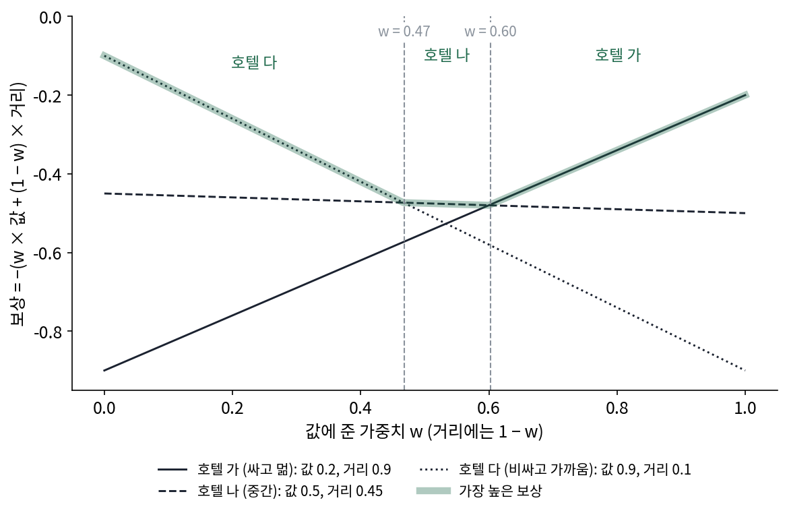
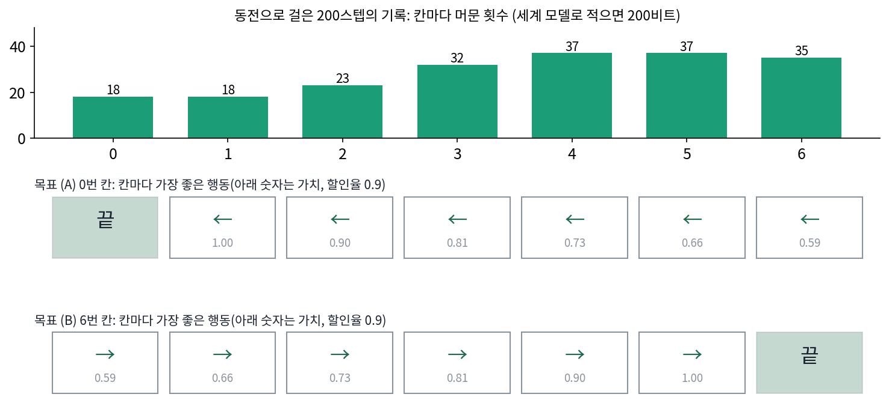
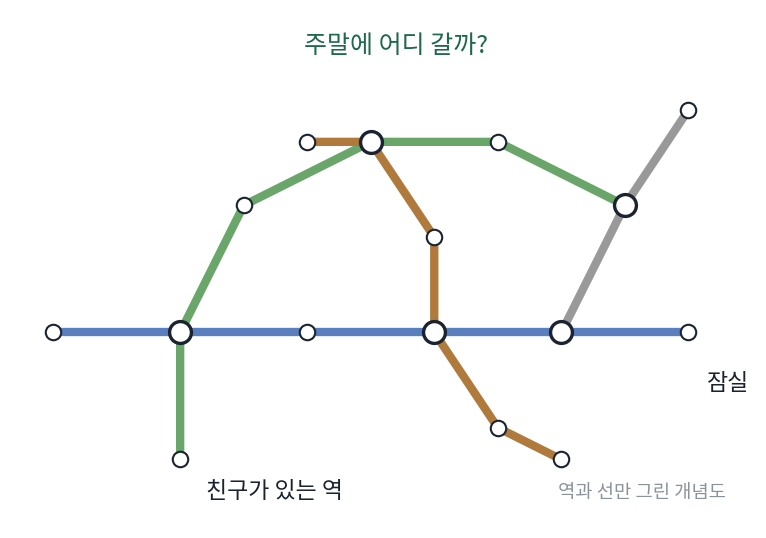
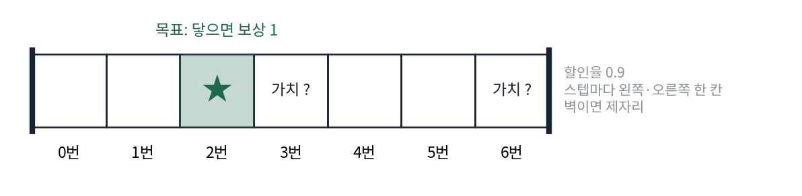
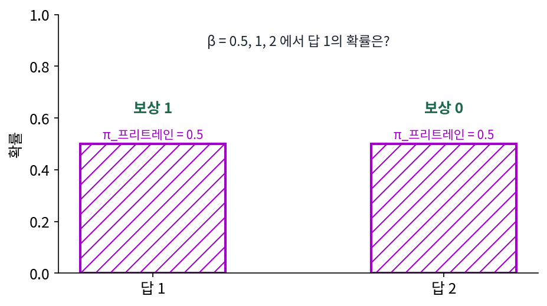

압축이 정하지 않는 것: 어느 해를 고를지, 무엇을 할지
이 책은 내내 「가장 짧은 설명」을 찾았는데, 설명이 여럿이고 모두 똑같이 짧으면 무엇을 골라야 할까? 그리고 세상을 가장 짧게 설명하는 모델을 얻었다면, 그 모델은 내가 무엇을 해야 하는지도 알려 줄까? 길을 모두 외운 지도도 목적지를 정해 주지는 않는다. 똑같이 짧은 해 가운데 고르는 물음은 최적화 책이, 무엇을 할지의 물음은 강화학습 책이 다뤘다.
역사: 「목표는 보상 하나의 합으로」라는 가설
강화학습을 세운 사람 가운데 하나인 서튼(Richard S. Sutton)은 앨버타 대학 연구실의 웹 페이지에 그가 「보상 가설」이라 부른 문장 하나를 걸어 두고 토론을 청했다. 「우리가 목표나 목적이라는 말로 뜻하는 것은 모두, 받는 스칼라 신호(보상)의 누적 합의 기댓값을 최대로 하는 것으로 잘 생각할 수 있다」. 이 쪽을 인용하는 논문들은 2004년으로 적는다. 서튼은 같은 쪽에 리트먼(Michael Littman)은 이것을 「강화학습 가설」이라 부른다고 적고, 보상 최대화를 사람 같은 지능의 모델로 진지하게 내세운 것이 강화학습의 특징이라고 썼다. 페이지에 달린 댓글에는 「에드먼턴에서 로스앤젤레스까지 가기」 같은 실제 일에는 보상 숫자가 어디에도 없고 연구자가 붙인 것이라는 반론, 싸고 가깝고 안전한 호텔처럼 여러 기준이 엉킨 목표도 스칼라 하나로 합쳐야 하느냐는 물음이 남아 있다. 서튼 자신은 같은 쪽에서, 최악을 피하려는 위험 회피도 보상을 알맞게 고르면 기대 누적 보상의 최대화로 줄일 수 있다는 것이 이 가설의 주장이라고 덧붙였다.

보상 가설이 맞든 틀리든, 압축의 이야기와 나란히 놓으면 목표는 어딘가에서 따로 주어진다는 한 가지가 분명해진다. 서튼의 문장에서도 보상은 행위자가 「받는」 신호이지, 세상을 관찰해 스스로 짜낸 것이 아니다.

목표를 보상 숫자 하나로 바꾸는 건 지금은 흔한 일 같아요. 사람이 두 답 가운데 하나를 고르면 보상 모델이 점수를 매겨 주잖아요.

사람의 쌍비교로 보상을 학습해 강화학습에 쓰는 방법이 널리 알려진 건 2017년 크리스티아노 등의 논문부터예요. 서튼이 그 페이지를 걸던 때에는 「에드먼턴에서 로스앤젤레스까지 가기」에 누가 숫자를 붙이느냐는 반론 앞에 내밀 방법이 마땅치 않았어요.

호텔 고르기처럼 기준이 여럿인 목표는요? 음, 값과 거리와 안전에 가중치를 정해 더하면 될 것 같은데… 그 가중치는 또 누가 정하죠?

그게 댓글에 남은 물음이에요. 가설은 목표를 보상의 합으로 「잘 생각할 수 있다」고 말할 뿐, 보상 숫자를 어디서 구하는지는 말하지 않아요.

그러면 보상은 결국 바깥에서 받아야 하네요. 세상을 아무리 잘 관찰해도 숫자가 저절로 나오지는 않고요.

세상을 가장 짧게 적는 모델을 이미 가지고 있다면, 목표가 바뀔 때 무엇은 그대로 쓰고 무엇을 새로 받아야 해요?
복도 일곱 칸, 목표 둘
0번부터 6번까지 칸 일곱 개가 한 줄로 놓인 복도가 있다. 한 스텝마다 왼쪽이나 오른쪽 가운데 한 방향을 골라 한 칸 움직이고(이 고름을 강화학습에서는 행동이라 부른다), 벽에 부딪히면 제자리다. 3번 칸에서 출발한 사람이 스텝마다 동전을 던져 행동을 정하며 200스텝을 걸었고, 칸·행동·다음 칸을 모두 기록했다.
이 기록을 적어 보자. 아무것도 모르면 한 스텝에 다음 칸(일곱 가지, log₂ 7 = 2.81비트)과 행동(1비트)을 적어 3.81비트, 200스텝에 761비트다. 「다음 칸 = 지금 칸 + 행동(왼쪽 −1, 오른쪽 +1), 벽에서는 제자리」라는 움직임 규칙(세계 모델)을 알면 다음 칸은 계산되므로 0비트이고 행동만 1비트씩, 200비트면 된다. 세계 모델은 이 기록을 가장 짧게 설명하지만, 행동이 동전으로 정해졌으니 행동의 1비트는 어떤 모델로도 줄일 수 없다.
이제 같은 복도에 목표를 주는데, (A)는 0번 칸에 닿으면 보상 1, (B)는 6번 칸에 닿으면 보상 1이다. 닿으면 끝나고, 늦게 닿을수록 보상을 한 스텝마다 0.9배로 깎아 센다(할인율 0.9). 같은 세계 모델로 칸마다 가장 좋은 행동을 계산하면 (A)에서는 모든 칸에서 왼쪽, (B)에서는 모든 칸에서 오른쪽이다.

기록을 200비트로 줄인 세계 모델은 기록 안에 보상이 없으니 (A)와 (B)에서 하나도 다르지 않은데, 해야 할 일은 정반대다. 세상을 가장 짧게 설명하는 모델은 「왼쪽으로 가면 어디에 닿는가」에는 답하지만 「어디에 닿고 싶은가」에는 답하지 않는다. 그렇다고 세계 모델이 쓸모없는 것은 아니어서, 칸마다 가장 좋은 행동을 계산할 때 쓴 것이 바로 움직임 규칙이다. 압축은 목표를 이루는 데 필요하지만, 목표를 정하지는 않는다.
목표가 압축 바깥에서 오듯, 똑같이 짧은 설명 가운데 하나를 고르는 일도 압축 바깥에서 정해진다. 모르는 수 셋을 식 두 개 x + y = 2, y + z = 3으로 맞추면 오차가 0인 해가 끝없이 많다. (−1, 3, 0)도 (0, 2, 1)도 오차가 0이니, 자료를 적는 비트는 모두 같다. 0에서 출발한 경사하강은 그 가운데 노름(벡터의 길이)이 가장 작은 (1/3, 5/3, 4/3)(노름 2.16)에 닿고, (1, 1, 1)에서 출발하면 (2/3, 4/3, 5/3)(노름 2.24)에 닿는다. 똑같이 짧은 설명 가운데 하나를 고른 것은 압축의 목표가 아니라 옵티마이저와 출발점이다. 그 선택이 노름이 작은 해, 그래서 적은 비트로 적을 수 있는 해 쪽으로 기우는 일이 많다는 것이 최적화 책의 「암묵적 편향」이고, 그 기울어짐이 처음 보는 자료에서 득이 되는지는 늘 따로 확인해야 한다.
ML에서: 프리트레인은 압축, 무엇을 답할지는 보상
큰 언어 모델은 먼저 다음 토큰(글을 잘게 나눈 조각) 맞히기로 글을 학습하는데, 이 책의 말로는 글을 짧게 적는 법을 배우는 단계다. 그런데 같은 물음에 대해 프리트레인 모델이 비슷한 확률을 주는 답은 여럿이다. 정중한 답과 무례한 답, 정확한 답과 그럴듯하게 틀린 답이 글 속에 함께 있었다면 둘 다 짧게 적힌다. 어느 답을 내야 하는지는 사람의 선호로 학습한 보상 모델과 강화학습이 정하니, 복도에서 세계 모델이 행동을 정하지 못한 것과 같은 구조다. 보상이 확률을 얼마나 옮기는지는 아래 문제 9에서 센다.
문제 7. 노선도를 외운 친구
친구 하나가 서울 지하철 노선도를 다 외워서, 어느 역에서 어느 역으로 가려면 몇 번 갈아타야 하는지 바로 답한다. (가) 친구에게 「이번 주말에 어디 갈지」를 물으면 노선도가 답을 줄 수 있는가? (나) 친구가 노선도를 몰랐다면, 「주말에 잠실에 간다」는 목표가 생겼을 때 무엇이 곤란한가?

(가)는 노선도로 「가장 많이 가는 역」은 알 수 있잖아요. 사람들이 많이 가는 데로 가면 되죠.
노선도에 승객 수가 적혀 있나요? 그리고 사람들이 많이 가는 곳이 친구가 가고 싶은 곳인가요?
노선도에는 역과 선만 있네요. 승객 수가 있어도 제가 가고 싶은 데랑은 상관없고요.
노선도는 「어디서 어디로 이어지나」만 짧게 담은 거야. 어디로 갈지는 노선도 밖에서 와. 복도 실험에서 같은 기록에 목표만 바꿨더니 행동이 정반대였던 거랑 같아.

(나)는요?

목표가 생겨도 가는 길을 못 찾아요. 매번 역마다 물어봐야 하고요. 노선도는 목표를 정해 주지는 않지만, 목표가 생기면 바로 길을 계산하게 해 줘요. 압축이 필요하긴 한데 그것만으로 충분하지는 않은 거네요.

교과서를 다 외워도 시험 범위를 모르면 어디부터 볼지 못 정하는 거랑 같네요. 교과서가 노선도, 시험 범위가 목표고요. 범위는 교수님이 알려 주셔야 해요.
문제 8. 목표를 2번 칸으로 옮기면
같은 복도(칸 일곱, 할인율 0.9)에서 목표를 2번 칸으로 옮긴다. (가) 칸마다 가장 좋은 행동은 무엇이고, 3번 칸과 6번 칸의 가치는 얼마인가? (나) 200스텝 기록을 적는 비트는 바뀌는가? (다) 움직임 규칙을 모르고 기록만 가지고 있다면 (가)를 계산할 수 있는가?

계산했어요. 0번과 1번 칸은 오른쪽, 3번부터 6번은 왼쪽이에요. 가치는 3번 칸이 1.0, 6번 칸이 0.729요. 그런데 3번 칸이 왜 1.0이에요? (A)에서는 0.81이었는데요.
3번 칸에서 2번 칸까지 몇 스텝이죠?

한 스텝이요. 한 스텝에 닿으면 보상 1을 깎지 않고 받으니까 1.0이네요. 6번 칸은 네 스텝이라 0.9³ = 0.729고요.
(나)는요?
그대로 200비트예요. 목표를 어디로 옮겨도 기록은 같은 기록이에요. 보상은 기록 안에 없으니까요.
그럼 (다)는요? 기록만 있고 움직임 규칙을 아직 모른다면요?

기록에서 규칙을 뽑아낼 수는 있어요. 200스텝 동안 규칙을 어긴 스텝이 하나도 없으니까, 기록을 가장 짧게 적는 모델을 찾으면 그게 규칙이에요. 그런데 규칙 없이 기록만 들고 있으면, 2번 칸에서 몇 스텝 떨어졌는지부터 기록을 뒤져 가며 따져야 해요.
그래요. 기록을 짧게 적는 일과 행동을 고르는 일은 서로 다른 일이지만, 기록을 짧게 적는 세계 모델을 찾아 두면 행동 고르기가 쉬워져요. 강화학습에서 세계 모델을 따로 배우는 방법들이 기대는 생각이 이거예요.

미분방정식의 해를 한 번 구해 두면 초깃값만 바꿔 넣어 답을 얻는 것과 같네요. 해의 꼴이 세계 모델이고, 초깃값이 목표고요.
문제 9. 같은 비트, 다른 보상
프리트레인한 언어 모델이 어떤 물음에 대한 두 답에 똑같은 확률을 준다(두 답을 적는 비트가 같다). 사람의 선호로 학습한 보상은 답 1에 1, 답 2에 0이다. 프리트레인 모델에서 KL 발산으로 멀어지는 것을 벌하며 보상을 최대로 하면, 해는 π(답) ∝ π_프리트레인(답) × exp(보상 ÷ β)이다. (가) β = 0.5, 1, 2에서 답 1의 확률은 얼마인가? (나) β를 아주 크게 하면 어떻게 되는가? (다) 「프리트레인을 더 오래 하면 좋은 답을 고르게 된다」는 말은 맞는가?

β = 0.5면 e² / (e² + 1) = 0.8808, β = 1이면 0.7311, β = 2면 0.6225예요. β가 작을수록 답 1로 쏠려요.
β가 아주 크면요?
exp(보상 ÷ β)가 둘 다 1에 가까워지니까 0.5, 0.5요. 프리트레인 모델이 준 확률에서 하나도 안 움직여요.
그럼 (다)는요? 프리트레인을 오래 하면 두 답의 확률이 어떻게 될까요?

글을 더 잘 맞히게 되니까… 좋은 답 쪽으로 가지 않을까요?
글 속에 두 답이 비슷하게 섞여 있었다면, 글을 더 잘 맞히는 모델일수록 두 답을 더 정확하게 반반으로 맞힐 거야. 프리트레인이 겨누는 건 글이 실제로 그런 비율이었다는 거지, 어느 답이 좋은지가 아니니까.
그래요. 두 답이 똑같은 비트로 적힌다는 건 압축의 눈으로는 두 답이 구별되지 않는다는 뜻이에요. 그 동점을 깨는 건 보상이고, β는 그 보상을 프리트레인 모델에서 얼마나 멀리까지 믿을지를 정해요.
글쓰기 과제 예시 답안을 백 개 읽으면 예시처럼 쓰는 건 잘하는데, 어느 예시가 A를 받았는지는 채점 기준표를 봐야 알아요.